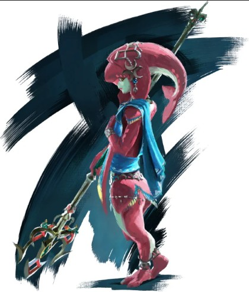
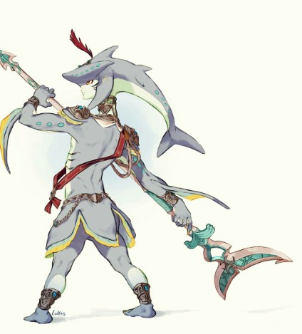
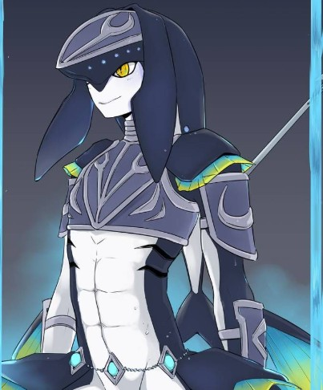

Le peuple Zora
Les Zoras sont des créatures aquatiques majestueuses, ressemblant à des poissons humanoïdes, et habitent principalement dans le domaine aquatique de Zora's Domain, situé dans le royaume d'Hyrule. Leur peau est d'un bleu éclatant et leurs nageoires leur permettent de se déplacer avec aisance dans l'eau. Dans Breath of the Wild, les Zoras sont dirigés par le prince Sidon, un personnage charismatique qui joue un rôle essentiel dans l'histoire du jeu. Ce peuple est réputé pour sa connexion avec l'eau et la maîtrise des techniques de combat liées à cet élément. Ils sont également célèbres pour leur beauté et leur longévité, bien qu’ils aient été touchés par la calamité de Ganon.
Caractéristiques des Zoras :
- Peuple d'homme-poisson
- Maîtrise de l'eau et de l'électricité
- Capacité à nager rapidement
- Amour pour la musique et la danse
- Utilisez les blocs de glace pour naviguer à travers le donjon.
- Activez les terminaux en utilisant les capacités de Mipha.
- Évitez les attaques d'eau et les pièges en utilisant votre bouclier et vos compétences de nage.
- Utilisez les blocs de glace pour atteindre le boss.
- Évitez ses attaques d'eau en utilisant votre bouclier.
- Attaquez-le avec des flèches et des attaques de mêlée.
Galerie
  Donjon : Vah Ruta
Le donjon de Vah Ruta est situé dans la région de Lanelle. Voici comment le battre :
Étapes pour battre Vah Ruta :
Boss : Eau de Ganon
Le boss du donjon Vah Ruta est l'Eau de Ganon. Voici comment le battre :